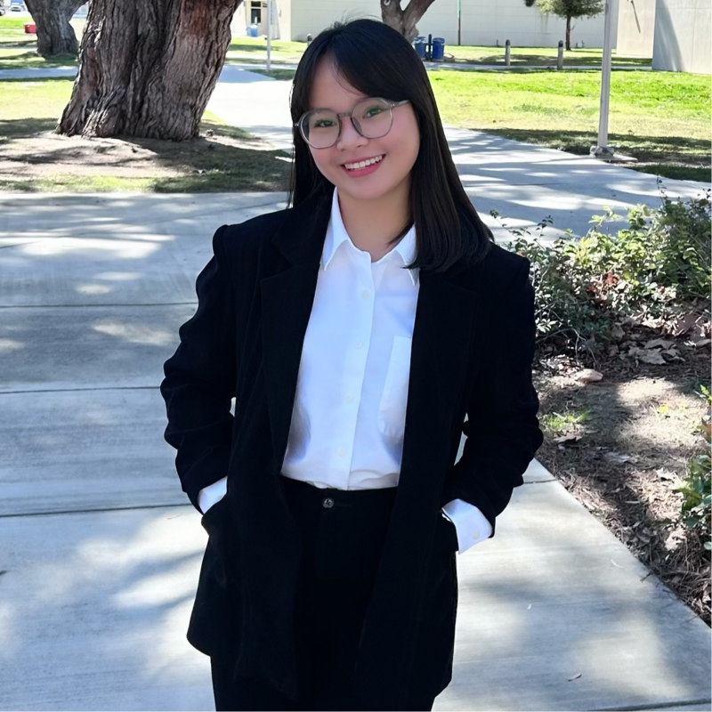
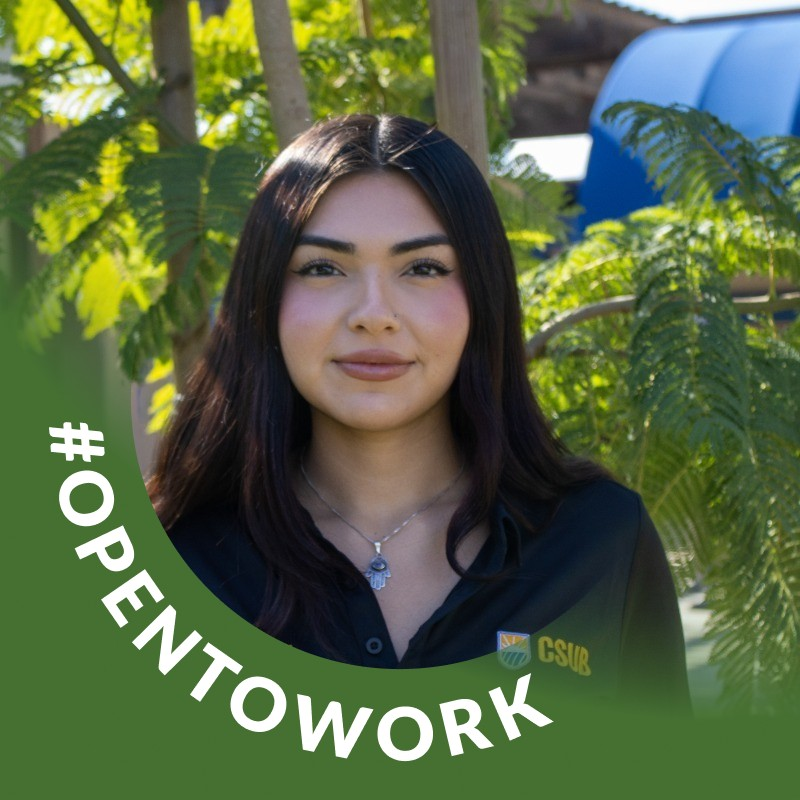

CSUB College of Business & Public Administration
Student Research
Scholar Club
Building the next generation of organizational behavior researchers
A faculty-mentored undergraduate research community at CSUB, focused on original research in organizational behavior and sustainability.
Our Mission
Research Experience
Participate in faculty-led empirical research from literature review to data collection, analysis, and conference presentation.
Mentorship
Receive small group mentoring from faculty advisors throughout the full research cycle, building skills for graduate school and academic careers.
Professional Development
Present at regional and national conferences, earn research certifications, and build professional networks with fellow scholars.
Community
Join a close, motivated group of student researchers who collaborate, support each other, and share a passion for discovery.
People
Current and past members of SRSC
Faculty Advisor
2025-2026 Cohort


Research Projects
2025-2026 Academic Year
Air Quality and Worker Health Outcomes
Investigating how environmental air quality in the San Joaquin Valley affects worker well-being and organizational outcomes using experience sampling methodology (ESM).

Leader Workaholism and School Withdrawal
Examining the relationship between leaders' workaholic behaviors and working students' school withdrawal tendencies, with implications for student well-being and retention.

Leader Workaholism and Reproductive Health
Exploring how leaders' workaholism impacts female employees' reproductive health outcomes and workplace support perceptions.